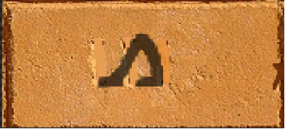
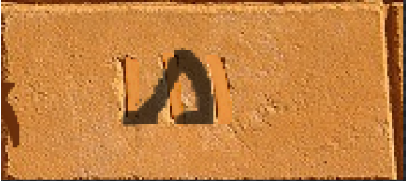
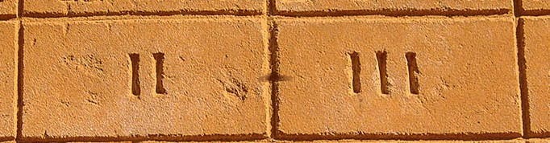
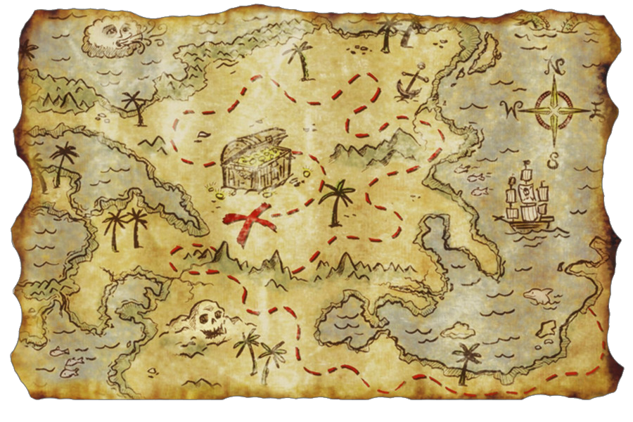

Ah, te has atrevido a jugar con el antigüo faraón. ¡Qué gratitud! En el oscuro rincón de los jeroglíficos olvidados, Donde el Nilo susurra secretos, misterios guardados, yace un tesoro oculto por los eones, un tesoro que solo alguien con un verdadero poder podrá obtener.
El faraón dejó su huella, una pregunta que persiste, ¿Cuántos guardias vigilan el enigma de Isis?
Si te pierdes en tu camino, con tu puntero ultra-violeta deberás iluminar estos murales
Los guardias de Isis se han dividido en dos grupos:
Ah ¿Necesitas ayuda? La luz ultra-violeta te guía: Decibra el secreto, es un estándar de 64 caracteres para representar datos binarios...
R2FyZGluZXIgRDU0LCBqZXJvZ2zDrWZpY28gZGUgY2xhc2lmaWNhY2nDs24 gRCBlbiBsYSB0YWJsYSBHYXJkaW5lciwgc2ltYm9saXphYmEgcGllcm5hcy BodW1hbmFzIHBlcm8uLiBUYW1iacOpbiB1biBuw7ptZXJvIG3DoWdpY28uLi4gU GllbnNhLCBpbnZlc3RpZ2EsIGV2b2x1Y2lvbmEg
 x La luz ultra-violeta te guía: Una operación muy sencilla es, los jeroglíficos de la piedra ante ti han de brillar y la respuesta ha de llegar...
La luz ultra-violeta te guía: Oh vaya.. ¿Un mapa del tesoro? ¿Qué tiene que ver con todo esto?
La simpleza a tu vista ha de resaltar, pero has de navegar entre trampas que debes descartar...
